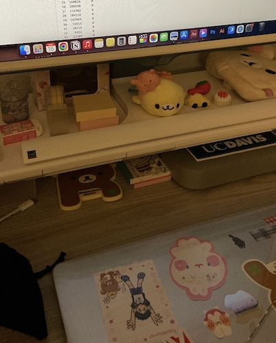

I am a full-time student at UC Davis. I am currently in my 4th year majoring in Design. My main focus is Information Design while my secondary focus is Graphic Design. I am also minoring in Data in Society. I really enjoy learning about data, data visualization, and other topics within the subject.